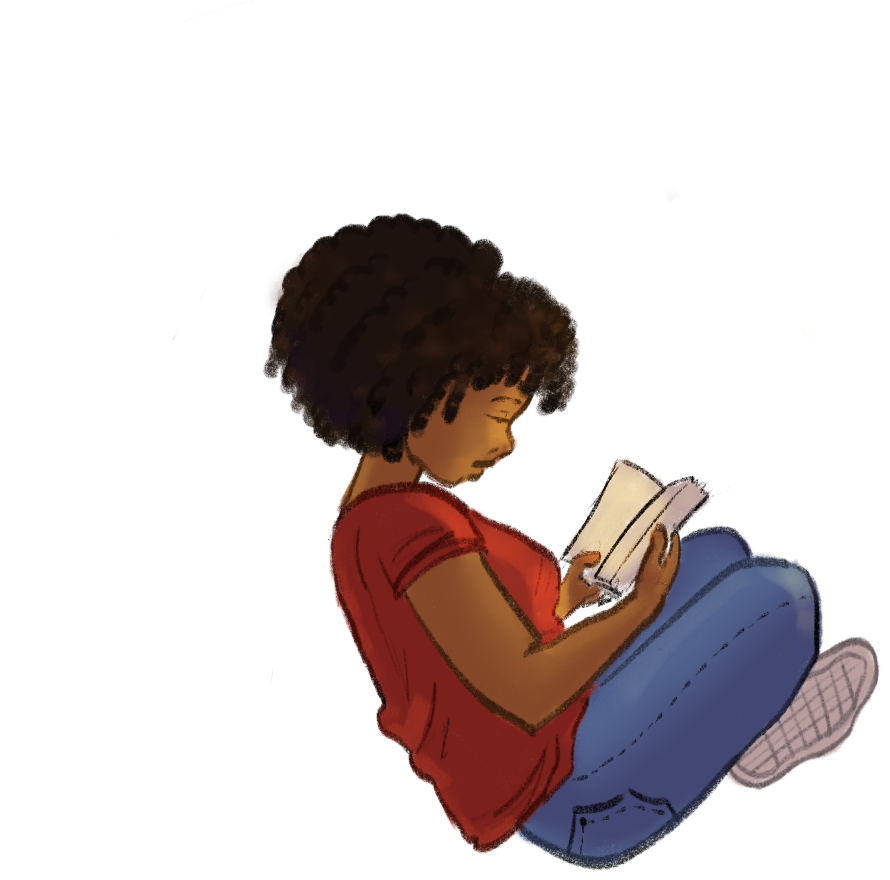

Uju
Duru
UX & Design Engineer
Nigeria to America at twelve; cognitive science and code since.

UX & Design Engineer
Nigeria to America at twelve; cognitive science and code since.

Three projects, each with the decision that mattered.
Where the engineering rigour comes from.
Eighteen pieces, and counting.
The one-page version.
Lift the bottom edge, or use the nav. ← → also work.